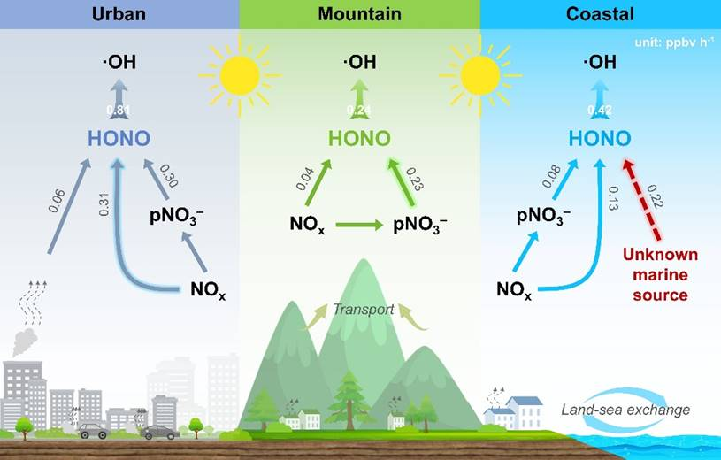
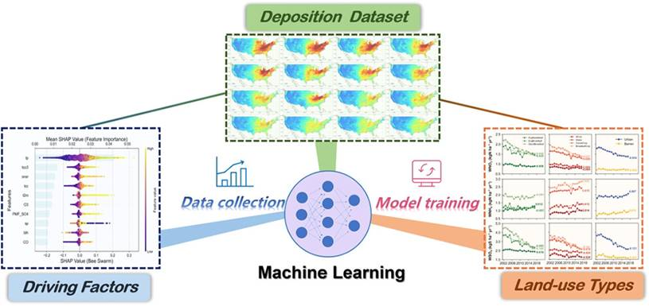
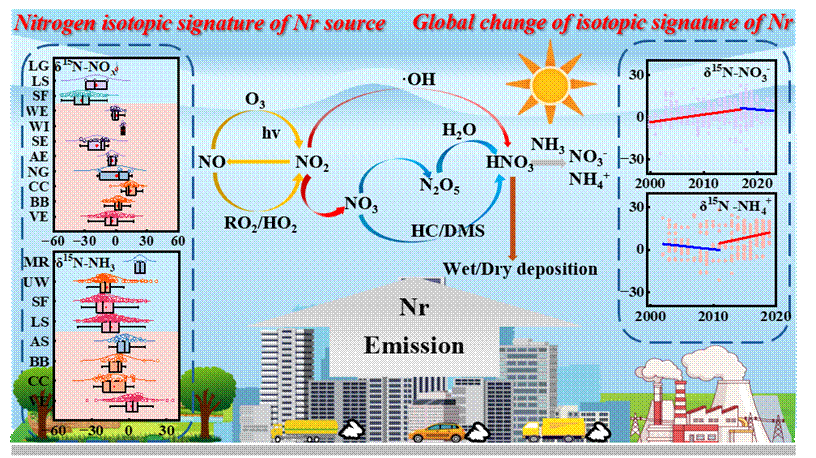
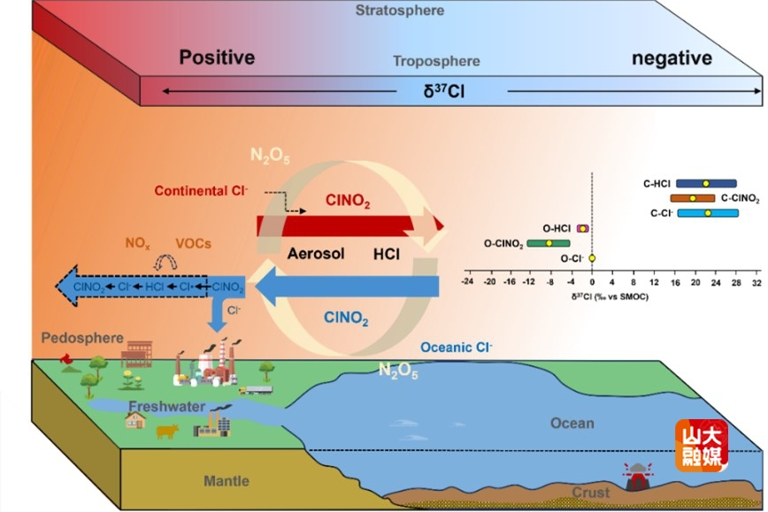
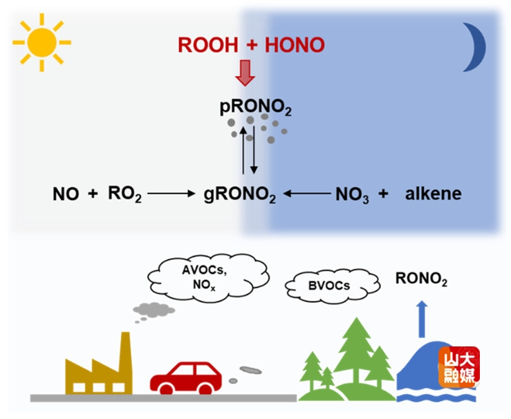
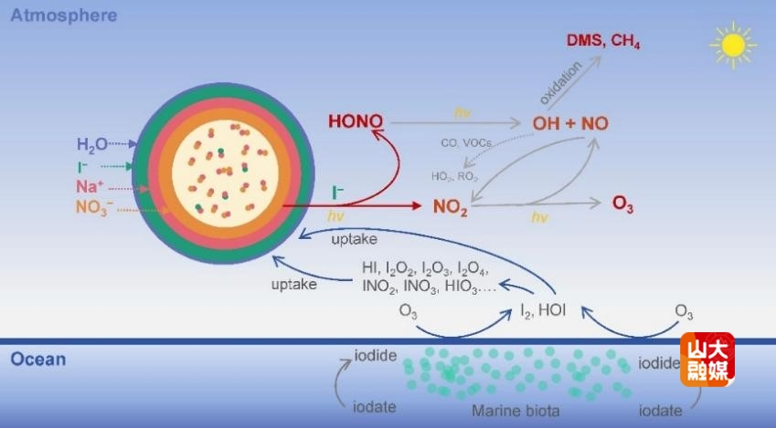
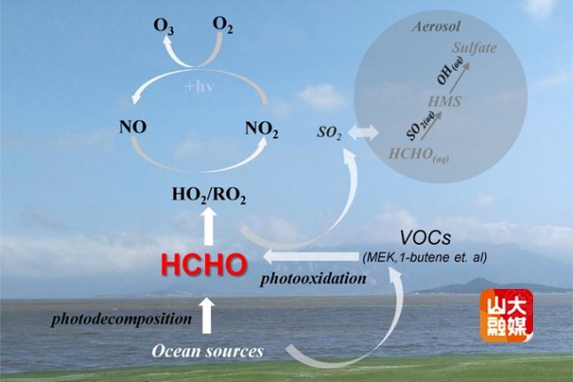

Research
Vision
TRACE at Shandong University studies how emissions, chemical reactions, and transport shape the atmosphere and its exchanges with land and ocean. We combine long-term and intensive field observations with laboratory experiments, stable isotope measurements, satellite retrievals, machine learning, and regional and global atmospheric models. Our goal is to explain how these processes drive regional pollution and assess how emission controls and climate policies can benefit air quality, climate, and health.
Key Research Questions
- Which sources and reaction pathways control nitrous acid (HONO), reactive halogens, and other short-lived gases, and how do they change the atmosphere’s ability to oxidize pollutants?
- Which reactions form and transform secondary aerosols, and what determines whether newly formed particles grow large enough to act as cloud condensation nuclei?
- How do biological emissions, sea spray, and reactions in marine aerosols change coastal air chemistry, and how far inland do these effects extend?
- How do long-range transport, precipitation, and land use determine how much atmospheric nitrogen and sulfur reach land and coastal waters?
- When is ground-level ozone formation most sensitive to nitrogen oxides or volatile organic compounds, and which emission strategies can deliver joint benefits for air quality, climate, and health?
Main Research Directions
- Reactive Gases and Atmospheric Oxidation. Use field measurements, isotope tracing, and chemical models to identify the sources and reaction pathways of reactive nitrogen and halogens and quantify their effects on ozone and secondary pollutant formation.
- Aerosol Chemistry, Particle Growth, and Cloud Condensation Nuclei. Use field and chamber studies to examine how reactions between gases and particles form and age secondary aerosol, and determine when newly formed particles grow large enough to seed cloud droplets.
- Ocean–Atmosphere Exchange and Coastal Chemistry. Quantify marine sources of reactive nitrogen, halogens, and carbonyl compounds and investigate how they interact with continental outflow to change coastal atmospheric oxidation and secondary pollution.
- Pollutant Transport and Atmospheric Deposition. Combine ground observations, satellite retrievals, chemical transport models, and interpretable machine learning to trace pollutants across regions and understand how wet and dry deposition deliver them to ecosystems.
- Ozone Formation, Emission Controls, and Climate Co-benefits. Assess how emissions, meteorology, and urbanization shape ozone pollution. Evaluate how precursor controls and climate mitigation strategies affect air quality and health under different emissions and climate scenarios.
Atmospheric Reactive Nitrogen
Reactive nitrogen drives atmospheric oxidation and carries nitrogen from emissions to ecosystems. Field observations, statistical modeling, and stable isotopes help identify where these compounds come from, how they change in the air, and where they are deposited.
Nitrous Acid Sources across North China
Sunlight breaks down nitrous acid (HONO) to release hydroxyl radicals (OH), which initiate many of the reactions that form ozone and secondary particles. An observation-based chemical box model was used to compare four sites in northern China. These included an urban site in the Yellow River Delta, a high-altitude site on Mount Tai, and two sites at different distances from the coast in Qingdao.
In the modeled HONO budget, nitrate photolysis accounted for 45% of production at the urban site and 84% on Mount Tai. Reactions of nitrogen dioxide at the ground surface supplied another 22% at the urban site. The model underestimated the daytime peaks at both coastal sites, suggesting an additional marine source that varied with the tides. HONO supplied an estimated 31–57% of daytime OH production across the sites, so missing sources can also affect estimates of coastal ozone formation.

Mapping Nitrogen and Sulfur Wet Deposition
Precipitation removes dissolved nitrogen and sulfur from the atmosphere and delivers them to land and water. Across the contiguous United States, a machine learning model combined monitoring data with meteorology, emissions, and land-use information to reconstruct wet deposition of nitrate, ammonium, and sulfate from 2002 to 2017 at 0.1° × 0.1° resolution.
The XGBoost model captured spatial and seasonal patterns in the measurements. SHAP analysis was used to interpret how precipitation, emissions, and other inputs shaped the predictions. Nitrate and sulfate deposition declined over the study period. Ammonium deposition increased by about 13% overall and by about 17% over agricultural landscapes. This divergence highlights the growing importance of agricultural ammonia when assessing the effects of emission controls on nitrogen deposition.

Tracing Reactive Nitrogen with Stable Isotopes
A synthesis of nearly 1,700 isotope measurements published between 1956 and 2023 examined reactive nitrogen in East Asia, North America, Europe, and other regions. The database brings together isotope signatures from sources such as coal combustion, traffic, biomass burning, and agriculture, along with measurements of atmospheric gases, particles, and deposition.
Combustion sources generally had higher nitrogen-15 signatures than noncombustion sources. Isotope ratios also changed as gases formed particles and as precipitation removed them, so source attribution must account for these transformations. Nitrate oxygen isotope ratios varied with latitude, providing clues to the oxidants involved in its formation. In East Asia, nitrate nitrogen isotope ratios peaked around 2017 and then declined, a pattern consistent with changes in fuel use and emission controls.

Publications
- Xuelian Zhong (2026). Atmospheric Nitrous Acid in Contrasting Environments in North China. Environmental Science & Technology, 60(14), 10961–10969.
- Jiangshan Mu (2026). Explainable Machine Learning for High-Resolution Modeling of Long-Term Atmospheric Nitrogen and Sulfur Wet Deposition across the United States. Environmental Science & Technology, 60(11), 8661–8670.
- Haoxin Sui (2026). Isotope-Based Tracing of Atmospheric Reactive Nitrogen: Progress and Prospects. ACS ES&T Air, 3(2), 245–261.
Marine Atmospheric Chemistry
Sea salt, aerosol reactions, and biological activity supply reactive chemicals to the marine atmosphere. Field measurements and experiments, together with molecular and atmospheric models, show how these sources affect coastal ozone formation, nitrogen cycling, and the oxidation of trace gases.
Tracing Oceanic and Combustion Sources of Chlorine
Reactive chlorine can accelerate the oxidation of hydrocarbons and influence ozone chemistry. Chemical ionization mass spectrometry was used to measure chlorine isotope ratios in nitryl chloride (ClNO2), a compound that releases chlorine atoms in sunlight. Estimated chlorine isotope signatures in nitryl chloride were about −9 ± 4‰ for the marine source and +20 ± 7‰ for the anthropogenic combustion source.
These distinct signatures helped quantify the two sources in field samples. Chloride emitted in sea spray could continue to cycle through gases and particles in polluted air as it traveled inland. The findings show why the marine contribution to reactive chlorine needs to be considered beyond the immediate coastline.

A Multiphase Route to Particulate Organic Nitrates
Organic nitrates help link nitrogen oxide chemistry to secondary organic aerosol. Laboratory measurements established that organic peroxides can react with nitrite in the particle phase to produce organic nitrates. The experiments investigated how acidity and peroxide structure affect reaction rates and product yields.
The proposed mechanism begins with a short-lived alkyl peroxynitrite. When it breaks down, the two radicals can recombine within the surrounding liquid to form an organic nitrate. Applying the experimental results to observations from Cape Verde and Beijing indicated that this pathway can contribute to organic nitrate formation in both remote marine and polluted urban aerosols.

Iodide and Reactive Nitrogen Recycling
Daytime HONO peaks are frequently observed in marine air. Laboratory experiments and molecular simulations showed that iodide tends to accumulate at the air–water interface of an aerosol particle, bringing more nitrate to the surface. Under conditions representative of marine aerosols, the presence of iodide increased HONO production from sunlight-driven nitrate breakdown by more than a factor of ten in the experiments.
In a global chemistry model, including this pathway accelerated the recycling of reactive nitrogen in the marine boundary layer. The simulations indicated higher hydroxyl radical and ozone concentrations over parts of the ocean, with potential effects on the atmospheric removal of methane and dimethyl sulfide.

Formaldehyde from Coastal Macroalgae
Summer measurements close to the Qingdao shoreline found that formaldehyde remained elevated even when air arrived from over the sea. Concentrations averaged 2.4 ± 0.9 parts per billion by volume and reached 6.8 parts per billion. Formaldehyde tracked compounds associated with marine air more closely than primary pollutants such as carbon monoxide.
Chamber experiments confirmed that sunlight-driven decomposition of green macroalgae released formaldehyde and other volatile compounds. A model constrained by the coastal measurements attributed 56% of primary hydroperoxy radical (HO2) production to formaldehyde chemistry. Leaving out that chemistry reduced the modeled ozone production rate by 15%. The results connect coastal algal activity to the local budgets of atmospheric radicals and ozone.

Publications
- Zheng Zong (2026). Isotopic constraints on the origin of reactive chlorine in the troposphere. Science Advances, 12(3), eaeb5397.
- Yu Yang (2025). Multiphase reactions of organic peroxides and nitrite as a source of atmospheric organic nitrates. Nature Communications, 16, 5437.
- Hengqing Shen (2025). Aerosol iodide accelerates reactive nitrogen cycling in the marine atmosphere. Nature Communications, 16, 8148.
- Hengqing Shen (2025). Marine sources of formaldehyde in the coastal atmosphere. Science Bulletin, 70(1), 96–103.